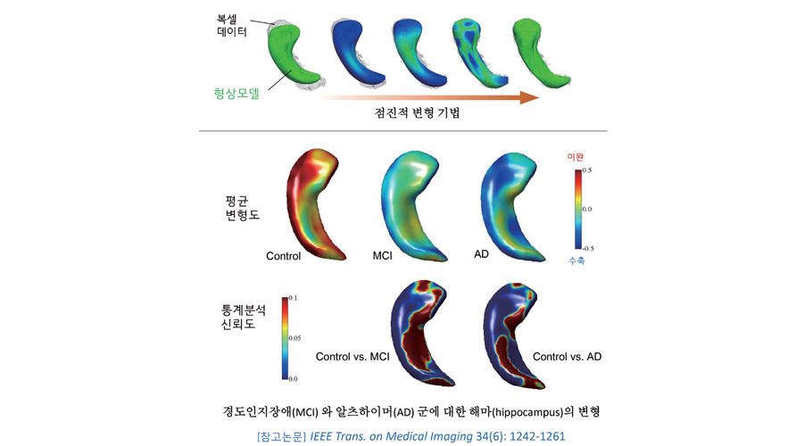

Report by Subjects
Report by Subjects
KAIST RESEARCH ACHIEVEMENTS
Hippocampal Morphology Study Based on Progressive Template Deformable Model
School of Computing Jinah Park
Summary
We have earlier proposed a mesh-to-volume registration approach characterized by a progressive model deformation. Our model implements a flexible weighting scheme for model rigidity under a multi-level neighborhood for vertex connectivity. This method induces a large-to-small scale deformation of a template surface to build the pairwise correspondence by minimizing geometric distortion while robustly restoring the individual shape characteristics. We successfully verified our modeling method in terms of the accuracy and robustness in smooth surface reconstruction as well as sensitivity in detecting significant shaped differences between healthy control and disease groups. The current research involves international collaboration in which our proposed computational modeling method has been applied to clinical investigations. Structural measures of the hippocampus have been linked to a variety of memory processes and to broader cognitive abilities. Using our modeling method, a comprehensive analysis of multi-domain cognitive associations was performed with respect to hippocampal deformations in cognitively normal older adults in the study of aging. Also, associations between hippocampal morphology, diffusion characteristics and salivary cortisol in older men were also investigated. The results were published in Neurobiology of Aging (IF=5.117) and Psychoneuroendocrinology (IF=5.381), respectively. The modeling method is also applied to other collaborative studies including one for distinguishing early and late MCI (mild cognitive impairment) stages.
Background
Hippocampus is a major structure which plays a crucial role within the neural systems for long-term spatial memory. The hippocampus has attracted massive attention, because its atrophy has been identified as a marker for identifying the development of neurodegenerative diseases.
A precise analysis of morphological changes of hippocampus could provide useful diagnostic information for individuals at risk. However, accurately recovering individual shapes of hippocampus from rough and noisy segmentations is as challenging as modeling the anatomical relationship between hippocampal shapes and clinical factors. To address these challenges, we have proposed a deformable shape modeling method recovering individual characteristics of hippocampus by progressively registering 3-dimensional (3D) template mesh of hippocampus to the segmentations. From its applications to studies on aging and Alzheimer’s disease, we have demonstrated that the accuracy and sensitivity of the proposed method are promising in detecting subtle shape differences of individual hippocampi in large image data sets of the clinical studies.

Contents
Progressive Template Deformable Model In our approach, subject-specific shapes of hippo-campus are recovered by registering a hippocampal template mesh to individual segmentation image data. The hippocampal template mesh represents the average shape of a target population in a form of triangular mesh. Geometric features of the template mesh are encoded using discrete Laplacian coordinates. Our method induces a large-to-small scale deformation of the template mesh to build the pair-wise correspondence by minimizing the distortion of the geometric features while robustly restoring individuals’ shape characteristics. Compared to the state-of-the-art methods using volume-to-volume registration and surface-to-surface registration, our method showed better performance in terms of accuracy and robustness in individual surface reconstruction, sensitivity in detecting significant shape differences between control and disease groups, and robustness in building shape correspondence across individual shape models. •A study on the relationships between hippocampal morphology and cognitive functions Structural measures of the hippocampus have been linked to a variety of memory processes as well as to broader cognitive abilities. Gross volumetry of hippocampus has been widely used, yet the hippocampus has a complex formation, comprising distinct subfields which may be differentially sensitive to the deleterious effects of age, and to different aspects of cognitive performance. In this study, we perform a comprehensive analysis of multi-domain cognitive associations with hippocampal morphology among a large group of healthy older adults of the Lothian Birth Cohorts 1936 (LBC 1936). LBC 1936 is a follow-up study of the Scottish Mental Surveys 1947, which had tested the intelligence of almost every child born in 1936 in the region of Lothian. The University of Edinburgh has been acquiring clinical information of the subjects in the study, such as cognitive tests, socio-demographic information, health status, and brain MR images, at age 70. In 654 participants of the LBC 1936, we examined associations between the hippocampal morphology and a variety of memory tests as well as broader cognitive domains. Our results indicate that complex patterns of hippocampal deformation are associated with better processing speed and spatial memory in older age, suggesting that complex shape-based hippocampal analyses may provide valuable information beyond gross volumetry. • Studies on detecting abnormalities of hippocampal shapes The proposed method is actively employed as a tool to test various hypotheses on shape deformations in association with clinical knowledge on brain structures. For example, high, unabated glucocorticoid levels are thought to selectively damage certain tissue types. Particularly, the hippocampus is thought to be susceptible to such effects. However, evidence for associations between elevated glucocorticoid levels and lower hippocampal volumes in older age is inconclusive. For this hypothesis, we have conducted a morphology study using the proposed method on hippocampus and salivary cortisol with the University of Edinburgh. The analysis results support that the proposed method can detect potentially more subtle effects of cortisol levels on hippocampal structure than volumetry.
Expected effect
- to suggest a computational model for the morphometry of brain structures. Our proposed framework for group-wise shape analysis of brain structures consists of fully automated tools for (1) population-representative template construction, (2) individual shape model reconstruction, (3) group-wise model alignment, and (4) group-wise shape comparison. The proposed framework is distributed by NITRC (https://www.nitrc. org/projects/dtmframework/) to neuroscience community. In the studies above, the proposed method for 3D shape modeling has been evaluated on hippocampus. However, the method can be applied to shape modeling of various human organs. Our team is working on, for example, posture measurement of foot-ankle joints using 3D bone shape models, reconstructed using the proposed method, for diagnosis of foot disorders.
Research Funding
• Patient-specific multi-component organ modeling and its medical application, Basic Research Support Project, National Research Foundation of Korea
Development of computational models for characterizing atrophy of subcortical structures and ventricles. Research Exchange Support Project, National Research Foundation of Korea
Research Outcomes
“ Hippocampal morphology and cognitive functions in community-dwelling older people: the Lothian Birth Cohort 1936,” Neurobiology of Aging, Vol. 52, pp. 1~11, April 2017
“ Associations between hippocampal morphology, diffusion characteristics, and salivary cortisol in older men,” Psychoneuroendocrinology, Vol. 78, pp. 151~158, April 2017